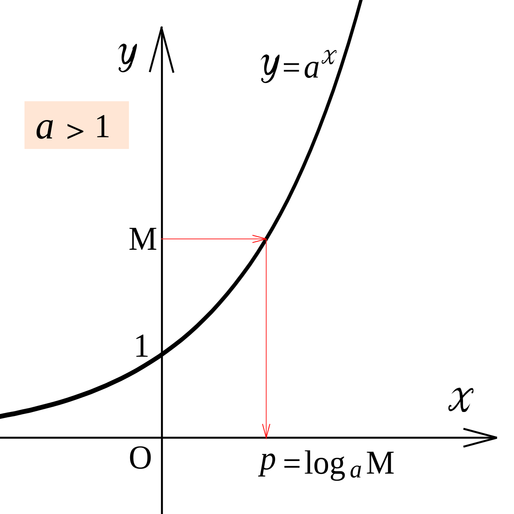
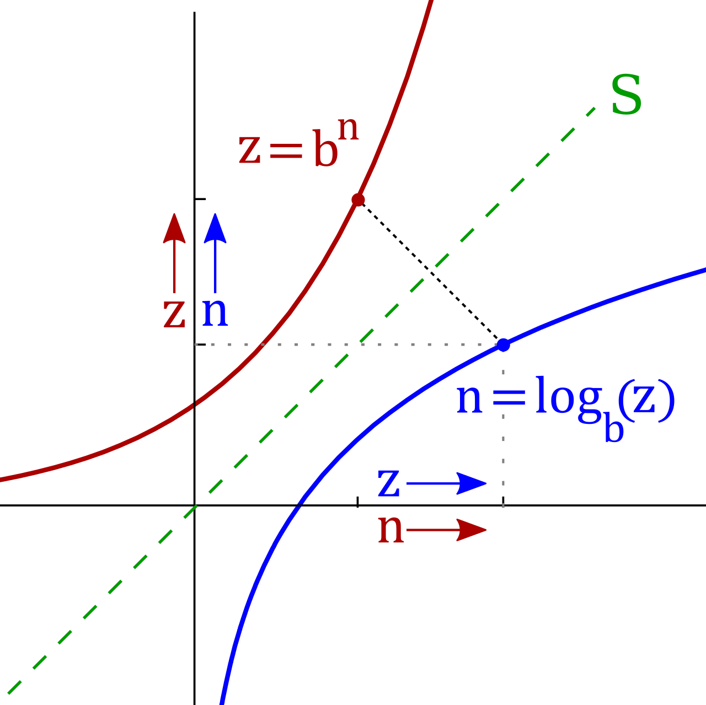
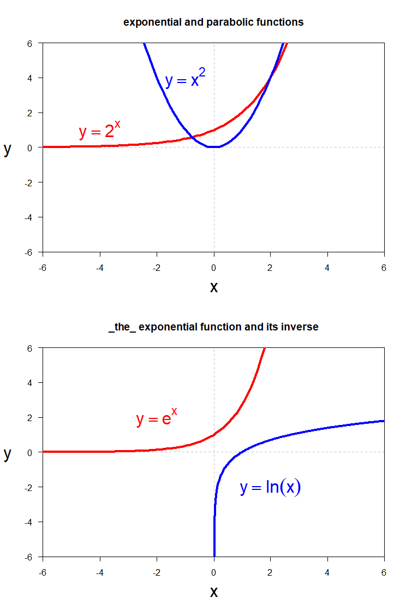
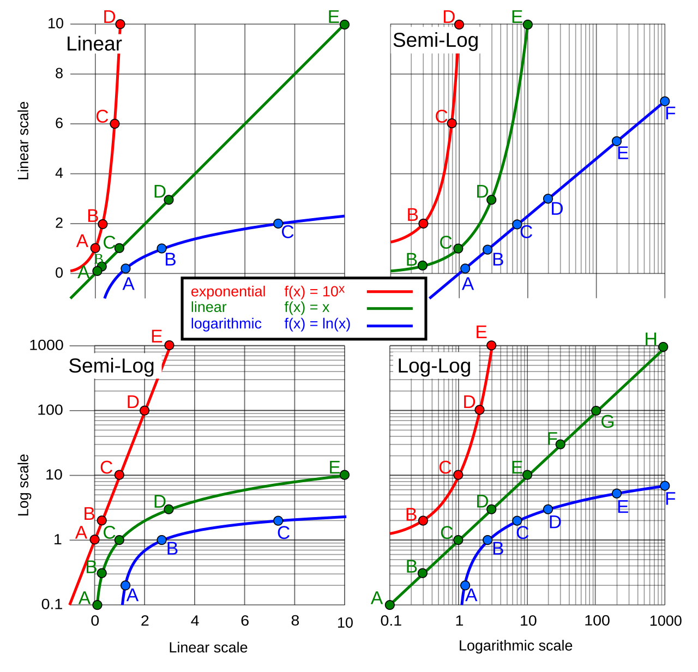

Logarithmic Functions
A logarithm is not a new kind of monster. It is an exponent wearing a different hat. Every time you ask "two raised to what power gives me thirty-two?" you are asking a logarithm question — you have been doing this since you first learned exponents, just without the vocabulary. This chapter gives you the vocabulary, shows you how to move a statement back and forth between exponential form and logarithmic form, teaches you to read a logarithmic graph, and hands you three properties that let you take a complicated logarithm apart or squeeze several logarithms into one. Go slowly, say the definition out loud a few times, and the rest follows.
By the end of this chapter you can
- State the definition of a logarithm as the inverse of an exponential function.
- Convert fluently between exponential form and logarithmic form.
- Name the restrictions on the base and the argument, and explain why they exist.
- Evaluate common logs, natural logs, and many other logarithms by inspection.
- Find the domain, vertical asymptote, and key points of a logarithmic graph, including shifted and reflected versions.
- Apply the product, quotient, and power rules — and avoid the three classic misuses of them.
- Expand a single logarithm into a sum and difference, and condense a sum and difference back into one logarithm.
- Use the change-of-base formula to evaluate a logarithm of any base on a calculator, and check solutions for extraneous answers.
Section 1What a logarithm is

Undoing an exponential
Start with a question you already know how to answer: 2 raised to what power gives 8? You said 3 instantly, because 23 = 8. You just evaluated a logarithm. The only thing missing was a symbol for "the power you raise 2 to," and that symbol is log.
Here is the whole definition, and it is worth memorizing word for word:
logb(x) = y means exactly the same thing as by = x.
Read the left side out loud as "log base b of x equals y." Read what it means as "y is the exponent you put on b to get x." If you can only remember one sentence from this chapter, remember this one: a logarithm is an exponent. The answer to any log question is always an exponent, and that is why logs behave the way they do for the rest of the chapter.
Why do we need this at all? Because an exponential function like f(x) = 2x is one-to-one — every input gives a different output — so it has an inverse function, and that inverse is the logarithm. Exponentials answer "I have the exponent, what is the result?" Logarithms answer "I have the result, what was the exponent?" Each undoes the other:
logb(bx) = x and blogb(x) = x
Converting between the two forms
Almost every logarithm problem in this chapter starts with a conversion, so make it automatic. The trick that works for most students: the base stays the base, and the logarithm's answer becomes the exponent. Draw a little loop from the base, up over the equals sign, to the answer.
| Exponential form | Logarithmic form | Said out loud |
|---|---|---|
| 25 = 32 | log2(32) = 5 | 5 is the power of 2 that makes 32 |
| 34 = 81 | log3(81) = 4 | 4 is the power of 3 that makes 81 |
| 10−2 = 0.01 | log10(0.01) = −2 | −2 is the power of 10 that makes 0.01 |
| 70 = 1 | log7(1) = 0 | 0 is the power of 7 that makes 1 |
| 251/2 = 5 | log25(5) = ½ | ½ is the power of 25 that makes 5 |
The rules about what is allowed
Two restrictions come with the definition, and neither is arbitrary.
First, the base must satisfy b > 0 and b ≠ 1. A negative base breaks down as soon as you use fractional exponents (what would (−4)1/2 be?), and a base of 1 is useless because 1y = 1 for every y — the question "1 to what power gives 8?" has no answer at all.
Second, the argument — the thing inside the log — must satisfy x > 0. This one trips people up until they see why. Since b is positive, by is always positive, no matter what y is. A positive number raised to any power — positive, negative, zero, fractional — can never land on zero or on a negative number. So there is no exponent that makes 2y equal −8, and log2(−8) is simply undefined. Keep that in your pocket; in Section 3 it becomes the rule that determines the domain of every logarithmic function.
A fully worked example
Solve log5(2x − 3) = 2.
Step 1 — Convert to exponential form. The base is 5, the answer is 2, so 2 becomes the exponent on 5:
log5(2x − 3) = 2 becomes 52 = 2x − 3
Step 2 — Do the arithmetic on the left. 52 = 25, so
25 = 2x − 3
Step 3 — Add 3 to both sides.
25 + 3 = 2x − 3 + 3 → 28 = 2x
Step 4 — Divide both sides by 2.
28 / 2 = 2x / 2 → 14 = x
Step 5 — Check it, including the domain. Put x = 14 back into the original argument: 2(14) − 3 = 28 − 3 = 25. Is 25 > 0? Yes, so the argument is legal. And log5(25) = 2, because 52 = 25. The left side equals the right side, so x = 14 is the solution.
- logb(x) = y means by = x — the log is the exponent.
- The logarithm is the inverse of the exponential: logb(bx) = x and blogb(x) = x.
- The base must be positive and not 1; the argument must be positive.
- To solve a simple log equation, convert to exponential form first, then solve normally and check the argument is positive.
Section 2Evaluating logarithms

Two bases get their own shorthand
Any positive base (other than 1) is allowed, but two bases show up so often that mathematicians stopped writing them.
The common logarithm has base 10, and we write it with no base at all: log(x) means log10(x). It shows up wherever we measure things in powers of ten — decibels, pH, the Richter scale, orders of magnitude.
The natural logarithm has base e, where e ≈ 2.718281828. We write it ln(x), which means loge(x). The number e looks strange the first time you meet it, but it is just a fixed number like π — irrational, non-repeating, and enormously useful because it is the natural growth rate of continuously compounding processes. On your calculator, LOG is base 10 and LN is base e. They are different buttons and they give different answers; mixing them up is the single most common calculator error in this chapter.
Evaluating by inspection
Most logarithms you meet in a homework set are meant to be done in your head. The method never changes: set the log equal to y, convert to exponential form, and rewrite both sides with the same base.
Four shortcuts fall straight out of the definition and are worth knowing cold:
| Shortcut | Why it is true | Example |
|---|---|---|
| logb(1) = 0 | Because b0 = 1 for every legal base | log9(1) = 0, ln(1) = 0 |
| logb(b) = 1 | Because b1 = b | log(10) = 1, ln(e) = 1 |
| logb(bk) = k | The log undoes the exponential | ln(e7) = 7, log(10−3) = −3 |
| blogb(x) = x | The exponential undoes the log | 10log(47) = 47, eln(6) = 6 |
Two more patterns are worth practicing because they look harder than they are. A reciprocal argument gives a negative answer: log2(1/8) = −3, because 2−3 = 1/(23) = 1/8. And a root gives a fractional answer: log9(3) = ½, because 91/2 = √9 = 3.
A fully worked example
Evaluate log8(4) without a calculator.
This one has no obvious answer — 8 to the first power is too big, 8 to the zero power is too small — so the answer must be a fraction between 0 and 1. Here is the full method.
Step 1 — Name the answer. Let y = log8(4).
Step 2 — Convert to exponential form.
8y = 4
Step 3 — Rewrite both sides with a common base. Both 8 and 4 are powers of 2: 8 = 23 and 4 = 22. So
(23)y = 22
Step 4 — Use the power-of-a-power rule (multiply the exponents):
23y = 22
Step 5 — Match the exponents. If the bases are equal and the expressions are equal, the exponents must be equal:
3y = 2
Step 6 — Solve. Divide both sides by 3:
y = (2)/(3)
Step 7 — Check. Does 82/3 really equal 4? A fractional exponent means "root on the bottom, power on the top": 82/3 = (3√8)2 = (2)2 = 4. It checks. So log8(4) = 2/3, and notice it landed between 0 and 1 exactly as we predicted.
- log(x) with no base written means base 10 (common log); ln(x) means base e (natural log), e ≈ 2.718.
- logb(1) = 0, logb(b) = 1, logb(bk) = k, and blogb(x) = x.
- To evaluate by inspection: set it equal to y, convert to exponential form, rewrite both sides with the same base, and match exponents.
- Reciprocal arguments give negative answers; roots give fractional answers.
Section 3Graphs of logarithmic functions

The shape of the parent function
Graph f(x) = log2(x) by picking convenient x-values — convenient here means powers of 2, so the logs come out clean.
| x | log2(x) | Because |
|---|---|---|
| 1/4 | −2 | 2−2 = 1/4 |
| 1/2 | −1 | 2−1 = 1/2 |
| 1 | 0 | 20 = 1 |
| 2 | 1 | 21 = 2 |
| 4 | 2 | 22 = 4 |
| 8 | 3 | 23 = 8 |
Plot those and a clear picture appears. The curve rises forever but rises more and more slowly — to gain one more unit of height you have to double your x. On the left side, as x shrinks toward 0, the curve plunges downward without limit, hugging the y-axis but never touching it. That vertical line x = 0 is the vertical asymptote.
Every parent logarithmic function y = logb(x) with b > 1 shares these features:
- Domain: x > 0, written (0, ∞) — you can never feed it zero or a negative number.
- Range: all real numbers, (−∞, ∞) — the output can be anything.
- Vertical asymptote: the line x = 0.
- x-intercept: the point (1, 0), because logb(1) = 0 for every base.
- Anchor point: the point (b, 1), because logb(b) = 1.
- No y-intercept — x = 0 is not in the domain of the parent function. (Shift the graph horizontally and that can change; see the worked example below.)
- The function is increasing when b > 1 and decreasing when 0 < b < 1.
Compare that list to the exponential function y = bx, whose domain is all reals, whose range is y > 0, and whose asymptote is the horizontal line y = 0. Every feature is swapped, because the two graphs are mirror images across the line y = x. That is what "inverse" looks like on paper.
Transformations, and where the asymptote goes
The general form is y = a·logb(x − h) + k. Each letter does one job, and the one you must never lose track of is h, because h drags the asymptote with it.
| Change | Effect on the graph | New asymptote | New domain |
|---|---|---|---|
| logb(x) + k | Shift up k (down if k is negative) | x = 0 (unchanged) | x > 0 |
| logb(x − h) | Shift right h (left if h is negative) | x = h | x > h |
| a·logb(x), a > 0 | Stretch vertically by a | x = 0 | x > 0 |
| −logb(x) | Reflect across the x-axis (curve now falls) | x = 0 | x > 0 |
| logb(−x) | Reflect across the y-axis | x = 0 | x < 0 |
Finding the domain is always the same one-line job: set the argument greater than zero and solve. For f(x) = log(3x − 12), require 3x − 12 > 0, so 3x > 12, so x > 4. Domain: (4, ∞), and the vertical asymptote is x = 4.
One warning before you do this on autopilot. When the variable carries a negative coefficient, solving the domain inequality makes you divide by a negative number, and dividing (or multiplying) both sides of an inequality by a negative number reverses the inequality sign. For f(x) = log(8 − 2x), require 8 − 2x > 0, so −2x > −8, and dividing by −2 flips the sign: x < 4. Domain: (−∞, 4), with the asymptote still at x = 4 — but now the curve lives to the left of it. Test a point to be sure: x = 0 gives log(8), which is defined, and 0 is indeed less than 4. ✓
A fully worked example
For f(x) = log2(x + 3) − 1, find the domain, the vertical asymptote, the x-intercept, and two more plotting points.
Step 1 — Domain. The argument must be positive:
x + 3 > 0 → x > −3. Domain: (−3, ∞).
Step 2 — Vertical asymptote. The asymptote sits where the argument equals zero: x + 3 = 0, so x = −3. (Notice the parent asymptote x = 0 moved left 3, matching the "+3" inside.)
Step 3 — x-intercept. Set f(x) = 0 and solve:
log2(x + 3) − 1 = 0
Add 1 to both sides: log2(x + 3) = 1
Convert to exponential form: x + 3 = 21 = 2
Subtract 3 from both sides: x = 2 − 3 = −1
So the x-intercept is (−1, 0). Check: f(−1) = log2(−1 + 3) − 1 = log2(2) − 1 = 1 − 1 = 0. ✓
Step 4 — Two more points. Choose x-values that make x + 3 a power of 2.
Let x = −2: f(−2) = log2(−2 + 3) − 1 = log2(1) − 1 = 0 − 1 = −1. Point: (−2, −1).
Let x = 1: f(1) = log2(1 + 3) − 1 = log2(4) − 1 = 2 − 1 = 1. Point: (1, 1).
Step 5 — Assemble. Draw the dashed vertical line x = −3, plot (−2, −1), (−1, 0), and (1, 1), and sketch a curve that dives down along the asymptote on the left and rises slowly to the right. The range is still all real numbers — a vertical shift never changes that.
One bonus feature worth noticing: because the shift moved the asymptote to x = −3, the value x = 0 is now inside the domain, so this graph does have a y-intercept. Evaluate it: f(0) = log2(0 + 3) − 1 = log2(3) − 1 ≈ 1.585 − 1 = 0.585, giving roughly (0, 0.585). The parent graph had no y-intercept, but a horizontal shift can hand you one — so check the domain rather than reciting a rule.
- Parent graph y = logb(x): domain (0, ∞), range all reals, asymptote x = 0, passes through (1, 0) and (b, 1).
- The parent graph has no y-intercept, but a horizontal shift can create one — check whether x = 0 is in the domain. The range is never restricted.
- Find the domain by setting the argument > 0; find the asymptote by setting the argument = 0.
- Horizontal shifts move the asymptote; vertical shifts, stretches, and reflections do not.
Section 4Properties of logarithms

Three rules, inherited from exponents
Because a logarithm is an exponent, every exponent rule you already know has a logarithm twin. There are three, and all of them assume M > 0, N > 0, b > 0, and b ≠ 1.
| Rule | Statement | Exponent rule behind it | Numerical check |
|---|---|---|---|
| Product | logb(MN) = logb(M) + logb(N) | bm·bn = bm+n | log2(8·4) = log2(32) = 5, and 3 + 2 = 5 |
| Quotient | logb((M)/(N)) = logb(M) − logb(N) | bm/bn = bm−n | log2(32/8) = log2(4) = 2, and 5 − 3 = 2 |
| Power | logb(Mp) = p·logb(M) | (bm)p = bmp | log2(43) = log2(64) = 6, and 3·2 = 6 |
Here is where the product rule comes from, in four lines. Let m = logb(M) and n = logb(N). Converting to exponential form, M = bm and N = bn. Multiply them: MN = bm·bn = bm+n. Convert that back to logarithmic form: logb(MN) = m + n = logb(M) + logb(N). The quotient and power rules are proved the same way, from the matching exponent rule.
Notice the pattern in plain English: a product inside becomes a sum outside, a quotient inside becomes a difference outside, and an exponent inside becomes a multiplier out front. That single sentence is the engine of Section 5.
Three ways to break the rules
These three errors account for most lost points on logarithm tests. Read them once carefully now and you will recognize them later.
Error 1: logb(M + N) is not logb(M) + logb(N). The product rule is about multiplication inside, not addition. Test it: log(5) + log(5) = log(25) by the product rule, but log(5 + 5) = log(10) = 1, and log(25) ≈ 1.3979. Those are different numbers, so the two expressions are genuinely not equal. A sum inside a logarithm cannot be broken apart at all.
Error 2: (logb(M))/(logb(N)) is not logb(M/N), and it is not logb(M) − logb(N) either. The quotient rule needs the division to happen inside one logarithm; here the division happens outside, between two finished logarithms. Check with base 2, M = 8, N = 2: the quotient is (log2(8))/(log2(2)) = 3/1 = 3, while log2(8/2) = log2(4) = 2. Not equal. Dividing two separate logarithms is a different operation entirely — in fact that quotient is the change-of-base formula from Section 5, and it equals logN(M).
Error 3: (logb(M))2 is not 2·logb(M). The power rule only applies when the exponent is inside, on the argument. logb(M2) = 2·logb(M), but squaring the whole logarithm is something else. Check with M = 100, base 10: log(100) = 2, so (log(100))2 = 4, while log(1002) = log(10000) = 4 as well — here they happen to match, which is exactly why you cannot trust one example. Try M = 1000: (log(1000))2 = 32 = 9, but log(10002) = log(1000000) = 6. Not equal.
A fully worked example
Given log(2) ≈ 0.3010 and log(3) ≈ 0.4771, find log(72) without a calculator.
Step 1 — Factor 72 into the numbers you were given.
72 = 8 · 9 = 23 · 32
Step 2 — Rewrite the logarithm.
log(72) = log(23 · 32)
Step 3 — Apply the product rule (multiplication inside becomes addition outside):
log(23 · 32) = log(23) + log(32)
Step 4 — Apply the power rule twice (exponents come out front):
= 3·log(2) + 2·log(3)
Step 5 — Substitute the given values.
= 3(0.3010) + 2(0.4771)
Step 6 — Multiply.
3(0.3010) = 0.9030 and 2(0.4771) = 0.9542
Step 7 — Add.
0.9030 + 0.9542 = 1.8572
So log(72) ≈ 1.8572.
Step 8 — Check that it is reasonable. Since 101 = 10 and 102 = 100, and 72 sits between 10 and 100, the answer must sit between 1 and 2. It does. (A calculator gives 1.85733, so we are right to three decimal places — the small gap in the fourth is only the rounding in the values we were handed.)
- Product: logb(MN) = logb(M) + logb(N).
- Quotient: logb(M/N) = logb(M) − logb(N).
- Power: logb(Mp) = p·logb(M).
- All three require M > 0 and N > 0; a sum inside a logarithm can never be split apart.
Section 5Expanding and condensing

Expanding: taking one logarithm apart
Expanding means rewriting a single complicated logarithm as a sum and difference of simpler ones, with no products, quotients, or exponents left inside. Work outside-in and follow this order every time:
- Apply the quotient rule first, to split the big fraction into a difference.
- Apply the product rule to split any remaining multiplications into sums.
- Apply the power rule to bring every exponent (including roots written as fractional exponents) out front.
- Evaluate any logarithm that comes out to a plain number.
Fully worked: expand log3((9x4)/(√y)), where x > 0 and y > 0.
Step 1 — Quotient rule. One fraction inside becomes a subtraction outside:
log3((9x4)/(√y)) = log3(9x4) − log3(√y)
Step 2 — Product rule on the first piece, since 9x4 is 9 times x4:
= log3(9) + log3(x4) − log3(√y)
Step 3 — Rewrite the radical as a fractional exponent, because the power rule cannot see a radical sign:
= log3(9) + log3(x4) − log3(y1/2)
Step 4 — Power rule on both variable terms:
= log3(9) + 4·log3(x) − ½·log3(y)
Step 5 — Evaluate what you can. log3(9) = 2, because 32 = 9. Final answer:
2 + 4·log3(x) − ½·log3(y)
Watch the subtraction sign in Step 1. If the denominator had contained a product — say √y·z — then both resulting pieces would be subtracted, because the whole denominator is what gets taken away.
Condensing: squeezing several logarithms into one
Condensing runs the same machinery backward. The goal is a single logarithm with coefficient 1. The order reverses:
- Use the power rule first, moving every coefficient up into an exponent. Nothing else can proceed until every log has coefficient 1.
- Use the product rule to combine every term being added into one logarithm of a product.
- Use the quotient rule to move every term being subtracted into the denominator.
Fully worked: condense 3·log2(x) + ½·log2(y) − 2·log2(z).
Step 1 — Power rule on all three terms. Each coefficient becomes an exponent:
= log2(x3) + log2(y1/2) − log2(z2)
Step 2 — Product rule on the two added terms. Addition outside becomes multiplication inside:
= log2(x3 · y1/2) − log2(z2)
Step 3 — Quotient rule. Subtraction outside becomes division inside:
= log2((x3 · y1/2)/(z2))
Step 4 — Write the fractional exponent as a radical if you prefer:
= log2((x3√y)/(z2))
Step 5 — Check by expanding it back. Quotient rule gives log2(x3y1/2) − log2(z2); product rule gives log2(x3) + log2(y1/2) − log2(z2); power rule gives 3·log2(x) + ½·log2(y) − 2·log2(z). Back where we started. ✓
| Direction | Goal | Order of rules | Signal in the problem |
|---|---|---|---|
| Expanding | Many simple logs | Quotient → Product → Power | "Write as a sum and/or difference" |
| Condensing | One single log | Power → Product → Quotient | "Write as a single logarithm" |
Change of base
Your calculator has only two logarithm buttons, base 10 and base e. So what do you do with log5(89)? You change the base:
logb(M) = (logc(M))/(logc(b)) for any legal new base c
This is a fraction, so it is fair to ask when the denominator could be zero. It never can: logc(b) = 0 would force b = 1, and b = 1 was already ruled out as a base back in Section 1. Both bases also have to stay positive, and M > 0 as always. So the formula is defined for every logarithm you are allowed to write in the first place.
In practice c is 10 or e, giving the two forms you will actually type: logb(M) = (log(M))/(log(b)) or logb(M) = (ln(M))/(ln(b)). Both give the same number. The memory hook: the old base goes on the bottom.
Fully worked: evaluate log5(89) to four decimal places.
Step 1 — Estimate first. 52 = 25 and 53 = 125. Since 89 sits between 25 and 125, the answer must sit between 2 and 3.
Step 2 — Apply change of base with natural logs (old base 5 goes on the bottom):
log5(89) = (ln(89))/(ln(5))
Step 3 — Evaluate each piece.
ln(89) ≈ 4.48864 and ln(5) ≈ 1.60944
Step 4 — Divide.
4.48864 / 1.60944 ≈ 2.78895
Step 5 — Round and check. log5(89) ≈ 2.7889, which lands between 2 and 3 exactly as predicted. Verify by reversing it: 52.7889 ≈ 89. ✓
One more use: solving equations, and checking for extraneous solutions
Condensing is the standard first move when an equation has two logarithms on one side. But logarithms have a domain restriction, so the algebra can hand you an answer the original equation cannot accept. Those are extraneous solutions, and you must check for them every single time.
Fully worked: solve log5(x) + log5(x − 4) = 1.
Step 1 — Note the domain up front. We need x > 0 and x − 4 > 0, so x > 4. Any answer at or below 4 will have to be thrown out.
Step 2 — Condense the left side with the product rule:
log5(x(x − 4)) = 1
Step 3 — Convert to exponential form.
x(x − 4) = 51 = 5
Step 4 — Distribute and set equal to zero.
x2 − 4x = 5 → x2 − 4x − 5 = 0
Step 5 — Factor. We need two numbers that multiply to −5 and add to −4: those are −5 and +1.
(x − 5)(x + 1) = 0 → x = 5 or x = −1
Step 6 — Test both against the domain. x = −1 fails, because log5(−1) is undefined — it is extraneous and gets discarded. x = 5 passes, since 5 > 4.
Step 7 — Verify the survivor in the original equation.
log5(5) + log5(5 − 4) = log5(5) + log5(1) = 1 + 0 = 1 ✓
The solution is x = 5, and only x = 5.
- Expand with quotient → product → power; condense with power → product → quotient.
- Rewrite radicals as fractional exponents before using the power rule.
- Change of base: logb(M) = (ln(M))/(ln(b)) = (log(M))/(log(b)) — the old base goes on the bottom.
- Always check candidate solutions in the original equation and discard any that make an argument zero or negative.
The chapter in one breath
- A logarithm is an exponent: logb(x) = y means by = x, and the two forms are interchangeable.
- The logarithm is the inverse of the exponential, so logb(bx) = x and blogb(x) = x.
- The base must be positive and not 1; the argument must be positive, because a positive base raised to any power is positive.
- log means base 10 and ln means base e; most other logarithms can be evaluated by rewriting both sides with a common base.
- The parent graph has domain (0, ∞), range all reals, a vertical asymptote at x = 0, and passes through (1, 0) and (b, 1) — and only a horizontal shift moves that asymptote.
- Three properties do all the work: product → sum, quotient → difference, power → coefficient out front.
- A sum inside a logarithm cannot be split, a ratio of two logarithms is not the log of a quotient, and squaring a log is not the same as the power rule.
- Change of base puts the old base on the bottom, and every logarithmic equation ends with a check for extraneous solutions.
ReferenceWords worth knowing
A quick reference for the terms in this chapter — skim it now, or circle back whenever a word trips you up.
- Argument
- The quantity inside the logarithm. It must always be strictly greater than zero.
- Asymptote, vertical
- A vertical line the graph approaches without ever reaching. For y = logb(x − h) it is the line x = h.
- Base
- The number being raised to a power. In logb(x) it is b, and it must satisfy b > 0 and b ≠ 1.
- Change-of-base formula
- logb(M) = (logc(M))/(logc(b)); it lets a calculator evaluate a logarithm of any base.
- Common logarithm
- A logarithm with base 10, written log(x) with the base left off.
- Condensing
- Combining a sum and difference of logarithms into one logarithm with coefficient 1.
- Domain
- The set of allowed inputs. For a logarithmic function it is every x that makes the argument positive.
- e
- The irrational constant approximately 2.718281828, the base of the natural logarithm.
- Expanding
- Rewriting one logarithm as a sum and difference of simpler logarithms with no products, quotients, or exponents inside.
- Exponential form
- The statement by = x, equivalent to the logarithmic form logb(x) = y.
- Extraneous solution
- A value produced by correct algebra that fails in the original equation, usually because it makes a logarithm's argument zero or negative.
- Inverse function
- A function that undoes another. The logarithm and the exponential with the same base are inverses, and their graphs are mirror images across y = x.
- Logarithm
- The exponent to which a base must be raised to produce a given number: logb(x) = y means by = x.
- Logarithmic form
- The statement logb(x) = y, equivalent to the exponential form by = x.
- Natural logarithm
- A logarithm with base e, written ln(x).
- One-to-one function
- A function in which no two different inputs share an output. Exponential functions are one-to-one, which is why they have inverses.
- Power rule
- logb(Mp) = p·logb(M) — an exponent inside becomes a multiplier outside.
- Product rule
- logb(MN) = logb(M) + logb(N) — multiplication inside becomes addition outside.
- Quotient rule
- logb(M/N) = logb(M) − logb(N) — division inside becomes subtraction outside.
- Range
- The set of possible outputs. For every parent logarithmic function it is all real numbers.
- x-intercept
- Where a graph crosses the x-axis. For y = logb(x) it is always (1, 0).